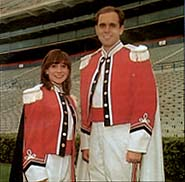
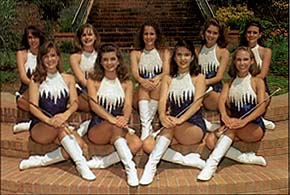
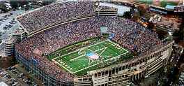

THE
AUBURN UNIVERSITY MARCHING BAND
|
|
For nearly a century, the Auburn University Marching Band has
captivated audiences across the nation with spectacular performances.
Whether marching before the home crowd or away, the Auburn Band
has attained a position of national distinction and a reputation
for excellence second to none.
Band members are chosen by audition, and represent virtually
every school and curriculum on the Auburn campus. About 50 of
the 330 members are music majors preparing for careers as performers
or teachers. The band includes members from over twenty states
as well as Alabama.
The Auburn Band is housed in Goodwin Hall, a building made possible
through the generosity of the James W. Goodwin family of Birmingham.
Outdoors, the band practices on Wilbur "Bodie" Hinton field, one
of the finest outdoor band rehearsal facilities in the country.
Throughout its history, one of the primary goals of the Auburn
University Marching Band has been to foster the famous Auburn
Spirit. With more than thirty performances and exhibitions
starting before the beginning of Fall Quarter and extending through
the bowl season, the Auburn Band does exactly that. Watch the
intricate drill as it unfolds to the challenging musical arrangements
and you'll see why the Auburn Band is recognized as one of the
premiere college marching bands in the nation.
The feeling of "Auburn people" toward the band is perhaps best
expressed in the words of former Auburn President, Dr. Harry Philpott:
"Some other institutions need to give descriptive names to their
bands in order to praise them. The quality of the music, the precision
of its drills, and the fine image that it portrays have made it
unnecessary for us to say more than 'This is the Auburn University
Band'."
|

Drum Majors Leslie Simon (Coral Springs, FL)
and Craig Aarhus (Sylacauga, AL) |
Directors: Johnnie Vinson, Greg
Byrne, Rick Good
Flag Captains: Celeste Shelton, Michelle Schmidt
Majorette Captain: Kristy Abrams
|
MAJORETTES

Front Row: Candace Noell (Anniston, AL), Julie Jarvis
(Deatsville, AL), Kristy Abrams (Wetumpka, AL), Ashleigh Irvin (Hueytown,
AL). Back Row: Page Pruitt (Birmingham, AL), Alice Russell (Athens,
AL), Holly Bolton (Columbiana, AL), Ginger Shelton (Alabaster, AL),
Amy Folsom (Brewton, AL). |
|

|
|

© 2000 Auburn Network, Inc
|
Last updated Friday, 13-Aug-1999 18:49:32 CDT
|